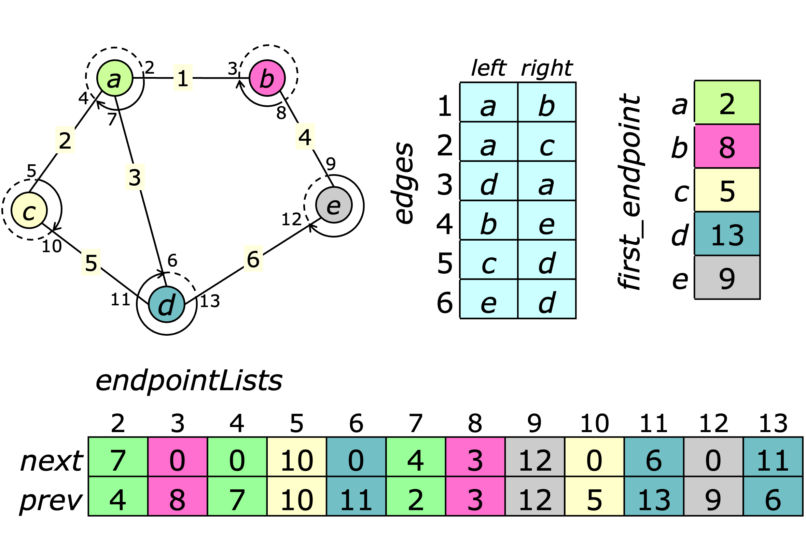

\(
\newcommand{\this}{\textit{this}}
\newcommand{\true}{\textit{true}}
\newcommand{\Graph}{\textit{graph}}
\newcommand{\Digraph}{\textit{digraph}}
\newcommand{\Flograph}{\textit{flograph}}
\newcommand{\ListPair}{\textit{list pair}}
\newcommand{\ListSet}{\textit{list set}}
\newcommand{\edges}{\textit{edges}}
\newcommand{\toString}{\textit{toString}}
\newcommand{\fromString}{\textit{fromString}}
\newcommand{\equals}{\textit{equals}}
\newcommand{\edgeRange}{\textit{edgeRange}}
\newcommand{\constructor}{\textit{constructor}}
\newcommand{\n}{\textit{n}}
\newcommand{\m}{\textit{m}}
\newcommand{\clear}{\textit{clear}}
\newcommand{\validVertex}{\textit{validVertex}}
\newcommand{\validEdge}{\textit{validEdge}}
\newcommand{\left}{\textit{left}}
\newcommand{\right}{\textit{right}}
\newcommand{\head}{\textit{head}}
\newcommand{\tail}{\textit{tail}}
\newcommand{\first}{\textit{first}}
\newcommand{\next}{\textit{next}}
\newcommand{\firstAt}{\textit{firstAt}}
\newcommand{\nextAt}{\textit{nextAt}}
\newcommand{\mate}{\textit{mate}}
\newcommand{\join}{\textit{join}}
\newcommand{\delete}{\textit{delete}}
\newcommand{\degree}{\textit{degree}}
\newcommand{\maxDegree}{\textit{maxDegree}}
\newcommand{\weight}{\textit{weight}}
\newcommand{\length}{\textit{length}}
\newcommand{\cost}{\textit{cost}}
\newcommand{\firstInto}{\textit{firstInto}}
\newcommand{\firstOutof}{\textit{firstOutof}}
\newcommand{\nextInto}{\textit{nextInto}}
\newcommand{\nextOutof}{\textit{nextOutof}}
\newcommand{\inDegree}{\textit{inDegree}}
\newcommand{\outDegree}{\textit{outDegree}}
\newcommand{\source}{\textit{source}}
\newcommand{\sink}{\textit{sink}}
\newcommand{\res}{\textit{res}}
\newcommand{\f}{\textit{f}\,}
\newcommand{\flow}{\textit{flow}}
\newcommand{\cap}{\textit{cap}}
\newcommand{\setCapacity}{\textit{setCapacity}}
\newcommand{\addFlow}{\textit{addFlow}}
\newcommand{\clearFlow}{\textit{clearFlow}}
\newcommand{\totalFlow}{\textit{totalFlow}}
\newcommand{\totalCost}{\textit{totalCost}}
\newcommand{\floor}{\textit{floor}}
\newcommand{\hasFloors}{\textit{hasFloors}}
\newcommand{\hasWeights}{\textit{hasWeights}}
\newcommand{\hasLengths}{\textit{hasLengths}}
\newcommand{\hasCosts}{\textit{hasCosts}}
\newcommand{\randomGraph}{\textit{randomGraph}}
\newcommand{\randomTree}{\textit{randomTree}}
\newcommand{\randomConnectedGraph}{\textit{randomConnectedGraph}}
\newcommand{\randomRegularGraph}{\textit{randomRegularGraph}}
\newcommand{\randomBigraph}{\textit{randomBigraph}}
\newcommand{\randomRegularBigraph}{\textit{randomRegularBigraph}}
\newcommand{\randomDigraph}{\textit{randomDigraph}}
\newcommand{\randomFlograph}{\textit{randomFlograph}}
\newcommand{\randomWeights}{\textit{randomWeights}}
\newcommand{\randomLengths}{\textit{randomLengths}}
\newcommand{\randomCosts}{\textit{randomCosts}}
\newcommand{\randomCapacities}{\textit{randomCapacities}}
\newcommand{\randomFloors}{\textit{randomFloors}}
\newcommand{\Random}{\textit{Random}}
\newcommand{\RandomGraph}{\textit{RandomGraph}}
\newcommand{\randomFraction}{\textit{randomFraction}}
\newcommand{\randomInteger}{\textit{randomInteger}}
\newcommand{\randomPareto}{\textit{randomPareto}}
\newcommand{\randomExp}{\textit{randomExp}}
\newcommand{\scale}{\textit{scale}}
\)
Graph Data Structures©
This section describes the data structures used to represent three
different types of graphs:
an undirected graph,
implemented by the $\Graph$ class,
a directed graph, implemented by the $\Digraph$ class,
and a flow graph, implemented by the $\Flograph$ class.
These form a class hierarchy, with $\Digraph$ extending
$\Graph$ and $\Flograph$ extending $\Digraph$.
It also includes a section describing several methods for generating
random graphs.
Undirected Graphs
The implementation of the $\Graph$ class is illustrated below.

Vertices are identified by integers in a bounded range $1\ldots n$,
where $n$ is number of vertices.
For small examples like this, lower-case letters are used to identify vertices,
in place of integer values.
Edges are also identified by integer values in a bounded range.
The edges array lists the pair of vertices joined by
each edge, assigning them arbitrary designations of left
and right.
A $\ListSet$ object is used to represent the
edges incident to each vertex.
More precisely, it represents lists of edge endpoints,
where the endpoints of edge $e$ are defined to be $2e$ and $2e+1$.
For example, edge 1 has its left endpoint (2) at vertex $a$ and its
right endpoint (3) at vertex $b$, so the endpoint list at $a$ includes
endpoint 2, while the list at $b$ includes 3.
The first_endpoint array identifies the first endpoint
in the endpoint list for each vertex.
This implementation supports efficient iteration through the entire edge set,
or the edges incident to each vertex. Edges can be added using the
$\join$ method.
It's generally most efficient to pre-dimension the
$\edges$ array to allow for the maximum number of
edges expected.
The implementation also includes a $\ListPair$ object that
keeps track of which edge numbers are in use and which are available
to be allocated. This allows edges to be easily deleted as well.
The implementation does supports dynamic expansion of the allocated memory
space, if that becomes necessary.
The $\Graph$ class supports the following methods.
- $\left(e)$ returns the vertex that is designated the left
endpoint of $e$.
- $\right(e)$ returns the vertex that is designated the right
endpoint of $e$.
- $\first()$ returns the first edge in the edge list.
- $\next(e)$ returns the next edge following $e$ in
the edge list.
- $\firstAt(u)$ returns the first edge in the list of
edges incident to $u$.
- $\nextAt(u,e)$ returns the next edge following $e$
in the list of edges incident to $u$.
- $\mate(u,e)$ returns the endpoint of $e$ that
is not $u$.
- $\join(u,v,e)$ joins vertices $u$ and
$v$ with a new edge. If the optional third argument is
provided, it must be an edge number not currently in use. This edge
number is used for the new edge. If the third argument is omitted,
an arbitrary choice is made for the new edge number.
- $\delete(e)$ removes the edge $e$.
- $\weight(e,w=null)$ is used to get or set the weight of
an edge; if $w$ is provided, the weight of edge $e$
is set to $w$. The weight of edge $e$ is returned,
in any case.
Properties $n$ and $m$ refer to the number of vertices and edges in
the graph.
Propertes $\length$ and $\cost$ are alternate names
for $\weight$.
The $\Graph$ class also supports the common methods,
$\toString()$, $\fromString()$ and
$\equals()$.
A $\graph$ can also be extended to define a bipartition on the vertices
(a division of the vertices into two subsets, where all edges join vertices
in different subsets).
In such a bipartite graph, vertices are divided into two subsets,
referred to as inputs and outputs, and all edges join an input
to an output. Methods are provided to iterate over the vertices in each subset.
The core of the Javascript implementation
is shown below. This version is purposely abridged to give a clearer
picture of the most essential features.
Consult the web app for the complete source.
Directed Graphs
The $\Digraph$ class extends the $\Graph$ class,
adding the following methods.
- $\tail(e)$ returns the tail of the directed
edge $e$.
- $\head(e)$ returns the head of the directed
edge $e$.
- $\firstInto(u)$ returns the first edge for which
$u$ is the head.
- $\firstOutof(u)$ returns the first edge for which
$u$ is the tail.
- $\nextInto(u, e)$ returns the next edge for which
$u$ is the head, following $e$.
- $\nextOutof(u, e)$ returns the next edge for which
$u$ is the tail, following $e$.
- $\inDegree(u)$ returns the number of incoming edges
at $u$.
- $\outDegree(u)$ returns the number of outgoing edges
at $u$.
One can still use $\firstAt(u)$ and $\nextAt(u, e)$
to iterate through all edges at $u$.
The core of the Javascript implementation is shown below.
This implementation places incoming edges before outgoing edges in
the adjacency list of each vertex.
Flow Graphs
The $\Flograph$ class extends the $\Digraph$ class,
adding an array of edge capacities and an array of edge flows.
It also defines two special vertices, the source vertex and
the sink vertex.
Finally, it adds the following methods.
- $\f(e,u)$ returns the flow leaving vertex $u$ on edge $e$.
May be negative.
If $u$ is omitted, it defaults to the tail of the edge.
- $\flow(e,f)$ sets the flow on edge $e$ to $f$.
- $\addFlow(e,u,f)$ adds $f$ units of flow leaving vertex $u$ on edge $e$.
- $\cap(e,c)$ sets the capacity of edge $e$ to $c$,
if the optional argument $c$ is present.
In any case, the capacity of $e$ is returned.
- $\res(e,u)$ returns the residual capacity of edge
$e$ leaving vertex $u$ ($u$ defaults to the tail).
- $\floor(e,f)$ sets a minimum flow requirement for edge $e$ to $f$,
if the optional argument $f$ is present.
In any case, the floor value is returned
(or 0, if floors are not enabled).
Properties $\source$ and $\sink$ identify the source and sink vertices.
They can also be used to set the source and sink.
The basic data structure can be extended to include edge costs,
which define a cost per unit of flow. By default, edge costs are zero.
The data structure can also be extended to include floors on the
edge flows. These define miniminum flows for each edge. By default,
the floor values are all zero.
The core of the Javascript implementation is shown below.
Random Graphs
The $\RandomGraph$ module provides a collection of methods for
generating simple (no self-loops or parallel edges) random graphs
of all three types.
It provides the following methods.
- $\randomGraph(n,m)$ returns a $\Graph$ object with
$n$ vertices and $m$ random edges.
- $\randomTree(n)$ returns a $\Graph$ object with
$n$ vertices that defines a random tree.
- $\randomConnectedGraph(n,m)$ returns a $\Graph$
object with $n$ vertices and $m$ edges
that is guaranteed to be connected.
- $\randomRegularGraph(n,d)$ returns a $\Graph$
object with $n$ vertices and $d$ edges
incident to each vertex.
- $\randomBigraph(n_i,d_i,n_o=n_i)$ returns a $\Graph$ object
that defines a bipartite graph with $n_i+n_o$ vertices
where the first $n_i$ are inputs and
the remaining $n_o$ are outputs.
The number of edges is the product of $n_i$ and $d_i$,
making $d_i$ the average vertex degree for the inputs.
- $\randomRegularBigraph(n_i,d_i,n_o=n_i)$ returns a $\Graph$
object that defines a bipartite graph in which each input has
exactly $d_i$ incident edges and the outputs have $d_o=n_i*d_i/n_o$ edges.
- $\randomDigraph(n,m)$ returns a $\Digraph$ object
with $n$ vertices and $m$ random edges.
- $\randomFlograph(p,q,k,m)$ returns a $\Flograph$
object with $2+p*q$ vertices and $m$ random edges.
The non-source/sink vertices are distributed among
$p$ levels with $q$ vertices per level.
For each value of $i$, edges are generated within level $i$,
from level $i$ to level $i+1$ and from $i$ to levels
$i-1$ through $i-k$. In addition, edges are generated from the
source vertex to every vertex in the first level, and to the sink
vertex from every vertex in the last level.
The number of edges is at most
$2q + ((p-1) + k(p-k) + (k(k-1)/2))q^2 + pq(q-1)$.
The above methods define random edges for graphs.
Each graph class is also equipped with methods to
assign random values to its edge properties
(weights, lengths, costs, capacities, floors).
These are summarized below.
- $\randomWeights(f)$ generates random weights for the
edges in a graph, using the random number generator $f$.
If the function $f$ requires any arguments, they must
be supplied as additional arguments to $\randomWeights()$.
For example, $\randomWeights(\randomInteger,3,7)$
assigns random integer values in [3,7] to the edges of a $\Graph$.
The $\randomInteger$ method can be found in the
$\Random$ module.
If edge weights have not been previously enabled, they are
enabled as a side-effect.
- $\randomLengths(f)$ is an alias for
$\randomWeights()$, for use on $\Digraph$ objects.
- $\randomCosts(f)$ is an alias for
$\randomWeights()$, for use on $\Flograph$ objects.
- $\randomCapacities(scale,f)$ generates random edge
capacities in a $\Flograph$ object. The $\scale$ argument
is applied to source/sink edges, allowing their capacities to
be scaled relative to those of other edges.
The second argument is a random number generator and any remaining
arguments are used as arguments to it.
- $\randomFloors(f)$ generates minimum flow requirements
for the edges, using a random number generator $f$.
The $\Random$ module contains several random number generators
that can be used in conjunction with the $\RandomGraph$ module.
- $\randomFraction()$ returns a random value in [0,1].
- $\randomInteger(lo,hi)$ returns a random integer in
$[lo,hi]$.
- $\randomExp(\mu)$ returns a random sample from an
exponential distribution with mean $\mu$.
- $\randomPareto(\mu,s)$ returns a random sample from a
Pareto distribution with mean $\mu$ and shape parameter
$s$.
© Jonathan Turner - 2022